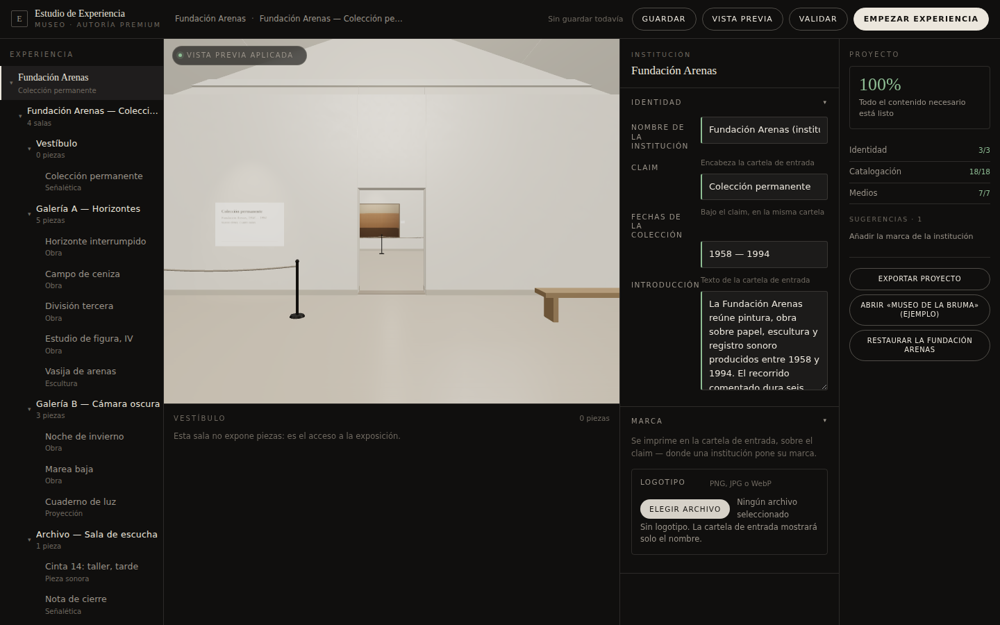
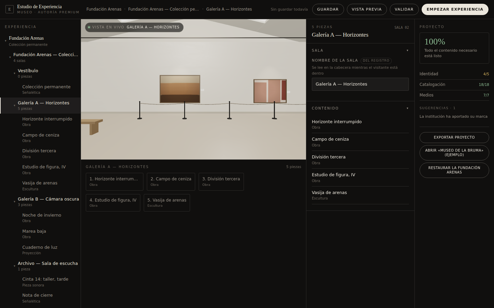
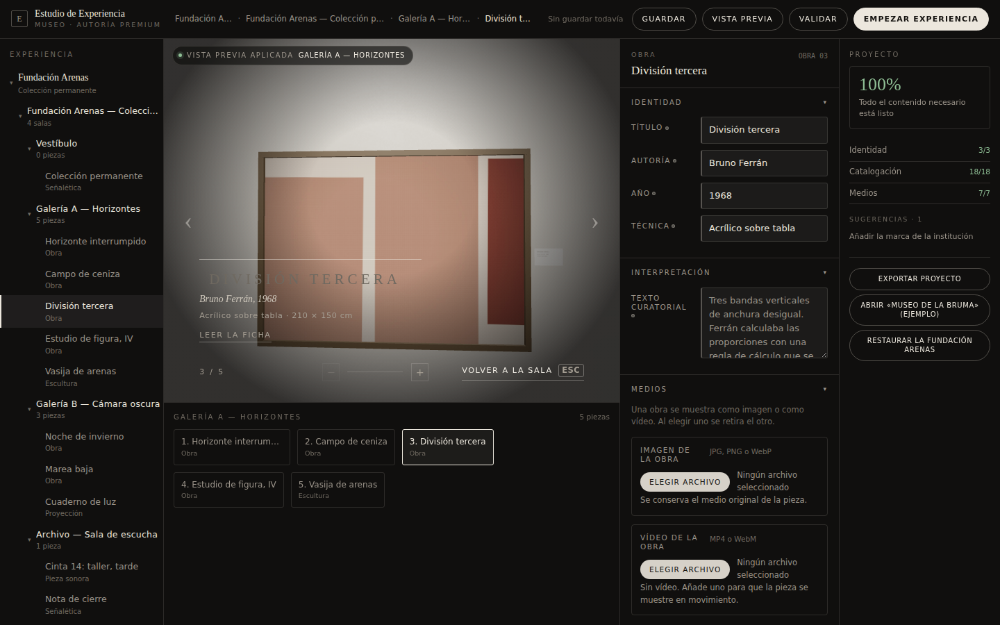
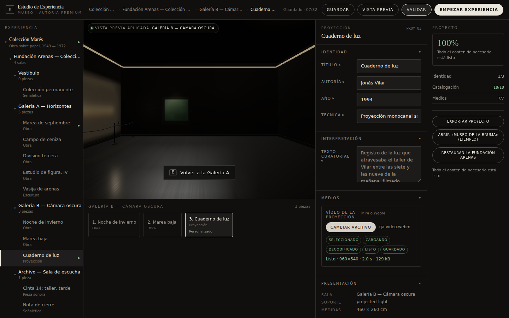
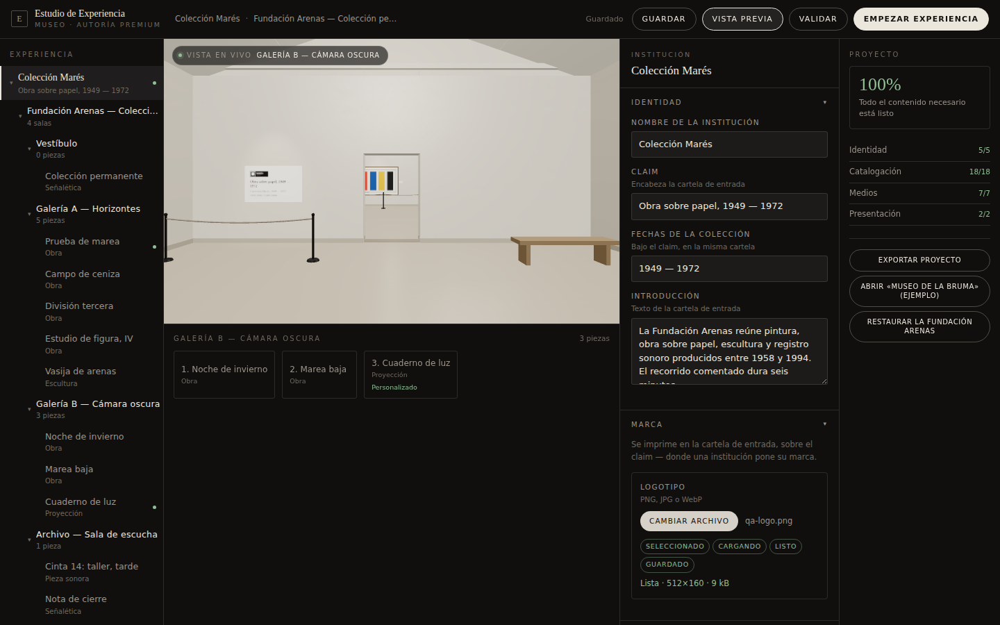
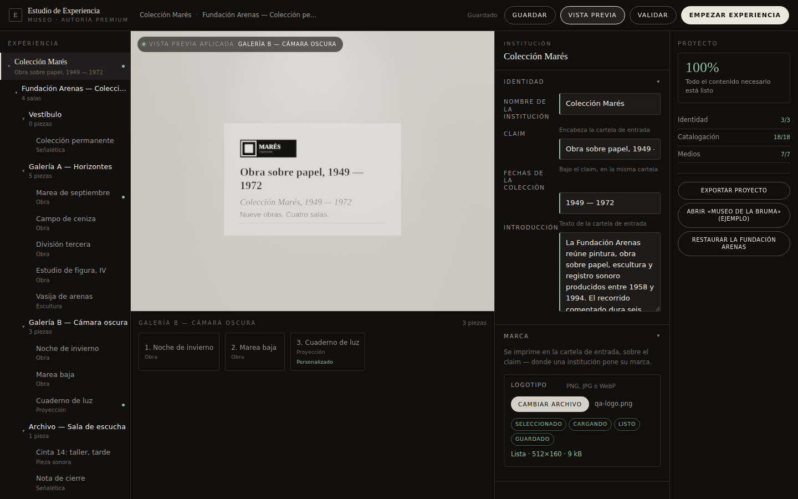
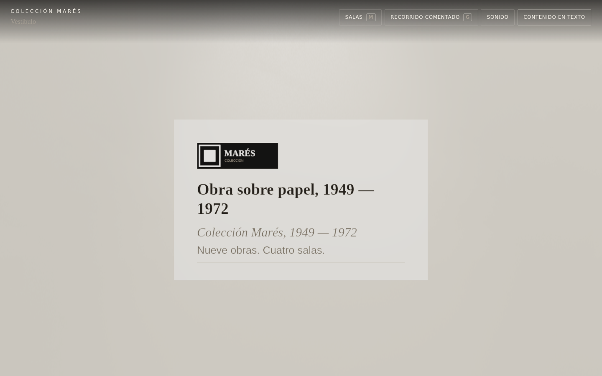
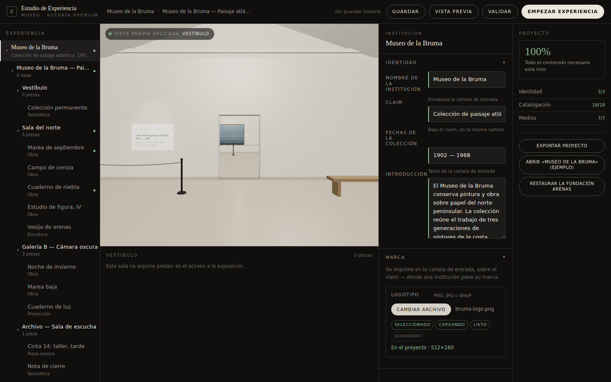

El Estudio de Experiencia sobre el Museo real, capturado en un navegador real. Cada
fotograma dice qué acción lo produjo, qué se esperaba y qué se observó, para que se pueda discrepar
del resultado y no sólo de la foto.
Superficie de revisión humana. No es una aprobación: el producto lo aprueba Juanma.
22capturas
14defectos registrados
11corregidos
3abiertos
0errores de consola
f0af246HEAD
VS01 frente a VS02
Misma tarea, mismo viewport, mismo contenido. VS01 sigue siendo ejecutable en
?authoring=1&shell=vs01: una referencia que no se puede arrancar no es una referencia.
Criterio
VS01
VS02
Navegación
Un desplegable con una obra seleccionada
Árbol de 4 salas y 11 piezas, todas alcanzables
Relación con la sala
Panel superpuesto sobre la sala
Sala acoplada en el centro, con proporción de visitante
Destino de los medios
Una ranura ambigua; el vídeo borraba la imagen
Ranuras semánticas por tipo de pieza
Estado del archivo
Una palabra
Cadena de estados, en español, con datos reales
Preparación del proyecto
No existía
Obligatorio/opcional, por dominios, con bloqueo real
Vista previa y Empezar
El mismo botón
Actos distintos; Empezar entra en modo visitante limpio
Idioma
«CHOOSE FILE / No file chosen»
Español en todo el producto
420 px
El panel ocupaba la ventana
Un documento, vista previa fija, sin desbordamiento
Defectos encontrados por Claude
Ordenados por severidad de producto; los abiertos, primero dentro de su severidad. Encontrados
mirando las capturas o midiendo las ejecuciones, no leyendo el código.
Cada archivo se aceptaba dos veces, y la cifra crecía con el uso
Se ve
El registro de transiciones mostraba SELECCIONADO → CARGANDO repetido: dos veces al principio de la sesión, doce veces después de unas cuantas selecciones.
Por qué
Un redibujado parcial volvía a enlazar todo el estudio, de modo que los controles que sobrevivían al redibujado acumulaban un oyente más cada vez. Una subida acababa ejecutándose seis veces: seis decodificaciones y seis object URL, cinco de ellos sin revocar.
Corrección
El enlazado es ahora local al fragmento redibujado. La suite de humo falla si un clic vuelve a producir dos aceptaciones — el defecto se escondía en un registro, no en un fotograma, y no debería depender de que alguien lo lea.
ALTAABIERTO — HEREDADOO1VS01
La proyección autorizada no se parece a la original y la causa sigue sin determinar
Se ve
Defecto abierto de VS01. VS02 no lo ha investigado.
Por qué
NO DETERMINADA.
Qué falta
Aplazado con trazabilidad, según §E7 del mandato: VS02 no toca la capacidad de Proyección más allá de encaminar el archivo correcto hacia ella, y ninguna tarea de aceptación queda bloqueada por esto. Sigue abierto y sigue siendo la primera pregunta pendiente del vertical.
Con «Colección Marés» ya escrito en el campo, la cabecera del editor, la miga de pan y la fila del árbol seguían diciendo «Fundación Arenas».
Por qué
Sólo la columna de proyecto se redibujaba al teclear.
Corrección
Cada superficie que nombra el registro sigue al campo que lo renombra, y seleccionar la institución lleva la vista previa a la cartela de entrada, que es donde esos campos se imprimen. El fotograma que debía demostrar «qué va a cambiar» demostraba lo contrario.
No se distinguía un dato heredado de un campo vacío
Se ve
Los valores del registro se dibujaban como placeholder gris, igual que la ausencia de dato.
Por qué
El editor usaba placeholder para mostrar lo que la ficha ya contiene.
Corrección
Los valores heredados son valores, marcados «del registro» hasta que el autor toma el campo. En una herramienta de catalogación esto no es estética: es integridad del dato.
A 420 px el editor era inalcanzable y la acción principal se salía
Se ve
Las columnas se recortaban a sí mismas —el editor mostraba una etiqueta y ningún campo—, «Empezar experiencia» quedaba cortada por el borde derecho, y desaparecían la miga de pan y el estado de guardado.
Por qué
Cada columna era un contenedor con scroll dentro de una pista de rejilla sin altura.
Corrección
Un solo documento que se desplaza, con la vista previa fija arriba, la miga y el estado anclados, y una barra inferior para saltar a cada sección.
MEDIAABIERTO — ACCESO DENEGADOO2Preflight
La referencia externa de calidad no es accesible desde este entorno
Se ve
thevertmenthe.dault-lafon.fr responde 403 en el CONNECT de la pasarela de salida, tanto por navegador real como por descarga.
Por qué
Política de red del entorno. No es una caída del sitio.
Qué falta
BARRA VISUAL EXTERNA — ACCESO BLOQUEADO / HUECO DE EVIDENCIA. La herramienta de captura queda escrita y comprobada; una sola ejecución produce la evidencia en cuanto el dominio se permita. Para esta vuelta la barra autorizada es la referencia de UI aprobada, el plano del sistema, VS01 y el Museo en funcionamiento.
MEDIAABIERTO — FUERA DE ALCANCE VS02O3W1
Tres de los cinco dominios están declarados y no implementados
Se ve
Experiencia, Visitante y Publicar aparecen en la navegación marcados «más adelante» y deshabilitados.
Por qué
El mandato los describe; su alcance no está autorizado en VS02 (§A5).
Qué falta
Se muestran en vez de ocultarse, para que la forma del producto sea legible, y se declaran incompletos en vez de fingirse. Si Juanma prefiere ocultarlos hasta que existan, es una línea.
La navegación del visitante peleaba con el estudio por la misma sala
Se ve
Dentro de la columna más estrecha, la barra del visitante se envolvía en tres filas sobre la sala y duplicaba lo que ya hacía el árbol.
Por qué
El HUD del visitante estaba diseñado para una ventana completa.
Corrección
La navegación del visitante espera al visitante. La cartela y el transporte del recorrido se quedan: eso es la vista previa diciendo la verdad sobre la experiencia.
«Guardado» aparecía en un proyecto que nunca se había guardado
Se ve
Tras aplicar una vista previa, la cadena marcaba GUARDADO como completado.
Por qué
El indicador miraba «no hay cambios pendientes» en lugar de «lo almacenado coincide con lo que hay en pantalla». Aplicar reconstruye el estudio, y un estudio recién creado no tiene cambios pendientes.
Corrección
Se compara el proyecto en pantalla con el almacenado. ASSET READY, CONFIG SAVED y PROJECT READY son tres cosas distintas y ahora se dicen por separado.
Nombres de la base de datos y de QA a la vista de la institución
Se ve
space.gallery-a, entity.artwork.division-tercera y un botón «CARGAR MUSEO B» con el mismo peso visual que «Exportar proyecto».
Por qué
Identificadores del modelo y nombres de fixture usados como texto de producto.
Corrección
SALA 02 y OBRA 03 en pantalla, el identificador real en el tooltip; y los botones nombran instituciones: «Abrir Museo de la Bruma (ejemplo)», «Restaurar la Fundación Arenas».
La vista previa medía su columna antes de que existiera la hoja de estilos
Se ve
El lienzo quedaba clavado en su altura mínima, 672×240 en vez de 672×420.
Por qué
El estudio se construía sin esperar a que cargara su CSS, y midió un div sin estilo.
Corrección
Se espera a la hoja, y la medida se repite en cada cambio de tamaño.
El recorrido del autor
Abrir · navegar la exposición · editar la institución · subir marca, imagen y vídeo · guardar ·
validar · vista previa · empezar como visitante · segunda institución · volver al original.
W1 · Árbol de la experiencia y espacio de trabajo — run vs02_w1_mss5a57y · HEAD 90a3576

02_VS02_DEFAULT · 1440×900 · Fundación Arenas
Estudio recién abierto sobre el Museo por defecto
Acción
Abrir ?authoring=1
Se espera
La sala ocupa el centro a su propio tamaño; el editor no la tapa
Se observa
lienzo 656×410 · Todo el contenido necesario está listo · un solo estudio (1)

03_EXPERIENCE_TREE · 1440×900 · Fundación Arenas
Galería A seleccionada en el árbol
Acción
Clic en la sala «Galería A — Horizontes»
Se espera
El árbol muestra Institución → Exposición → Salas → Piezas y la vista previa camina hasta la sala
Se observa
seleccionado space.gallery-a · lienzo 656×410

08_ARTWORK_SELECTED · 1440×900 · Fundación Arenas
Una obra concreta seleccionada
Acción
Clic en «División tercera» dentro de Galería A
Se espera
El editor cambia a esa obra y dice de qué sala y soporte se trata
La ranura nombra el archivo y dibuja la cadena. Un PNG de 9 kB decodifica antes de que se pueda fotografiar: la cadena SELECCIONADO → CARGANDO → LISTO queda registrada en transitions[], no simulada aquí
La cabecera pasa de «Cambios sin guardar» a una hora de guardado; GUARDADO se completa en la cadena del archivo — guardar el proyecto no es lo mismo que decodificar un archivo
Se observa
Guardado · 23:54

16_PROJECT_READY · 1440×900 · Fundación Arenas
Validación del proyecto
Acción
Pulsar VALIDAR
Se espera
Recuento por dominios, obligatorio frente a opcional, y una sola frase de estado
Se observa
READY · Todo el contenido necesario está listo

17_PREVIEW_APPLIED · 1440×900 · Fundación Arenas
Vista previa aplicada
Acción
Pulsar VISTA PREVIA
Se espera
La sala muestra el proyecto autorizado y el estudio sigue presente
Se observa
institución en el mundo: Colección Marés

17b_IDENTITY_ON_WALL · 1440×900 · Fundación Arenas
La cartela de entrada, con la identidad autorizada
Acción
Mirar la pared del vestíbulo tras aplicar
Se espera
Claim, fechas, firma institucional y la marca impresa sobre el claim
Se observa
space.lobby

18_VISITOR_START · 1440×900 · Fundación Arenas
Experiencia del visitante
Acción
Pulsar EMPEZAR EXPERIENCIA
Se espera
El estudio desaparece, el lienzo vuelve a la ventana completa y la navegación del visitante regresa. Sin restos de autoría
Se observa
estudios 0 · acoplado off · lienzo 1440px · barra del visitante true · url ?tier=HIGH&portalVariant=A

21_MUSEUM_B · 1440×900 · Museo de la Bruma
Museo de la Bruma — segunda institución
Acción
Abrir la configuración de la segunda institución
Se espera
Otra identidad, otras cartelas y otro árbol, sin tocar una línea del motor
institución en el mundo: Fundación Arenas (institución ficticia)
Medios autorizados presentes en el mundo tras aplicar, medidos y no fotografiados:
entity.lobby.bienvenida · TEXT · IMAGE · entity.artwork.horizonte-interrumpido · ARTWORK · IMAGE · entity.video.cuaderno-de-luz · PROJECTION · VIDEO
Condiciones
Chromium real, rasterizado por software. Fixtures generados para esta vuelta y deliberadamente
distintos de la colección: en VS01 se probó una subida con el archivo que la sala ya usaba, y la
captura de después salió idéntica a la de antes.
Consola: limpia en las tres tandas.
Puerta. A la espera de revisión de Juanma y de ChatGPT. Sin merge, sin promoción, sin
tocar master. Rama claude/immersive-worlds-module-c0d3f7, HEAD f0af246.
La evidencia de VS01 sigue intacta en qa/evidence-authoring/ y su artifact no se ha
reemplazado.